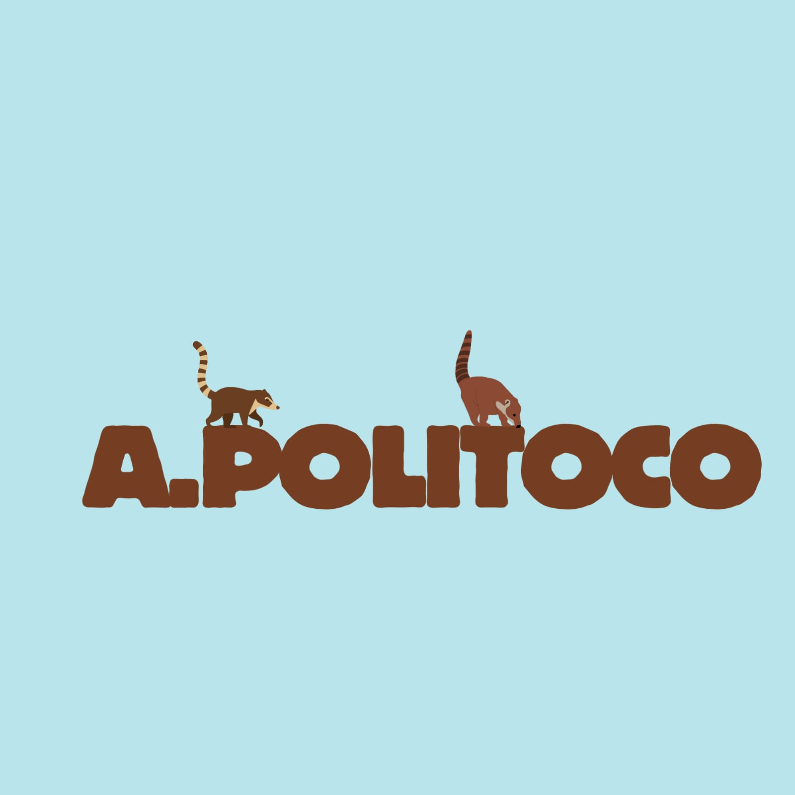

ECONOMÍA
Situación económica de Costa Rica
23 de noviembre de 2026
Un análisis de los principales acontecimientos económicos y su impacto en el país.
Leer artículo completo →
Información, ideas y actualidad
A.POLITOCO · PERIÓDICO DIGITAL
Selecciona una sección para consultar sus publicaciones. Los documentos PDF se pueden leer aquí mismo, sin salir de la página.
01 · PUBLICACIONES
23 de noviembre de 2026
Un análisis de los principales acontecimientos económicos y su impacto en el país.
Leer artículo completo →02 · PUBLICACIONES
El retiro de la estatua de José Figueres de la Plaza de la Democracia provocó cuestionamientos políticos y abrió un debate sobre la memoria histórica.
Leer artículo completo →03 · PUBLICACIONES
04 · PUBLICACIONES
LECTOR DE DOCUMENTOS
¿No se muestra el documento? Ábrelo en otra pestaña o descárgalo.